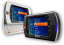
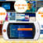
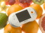

downloads
Files, widgets, and firmware updates for your Mylo.
widgets
Sony US widgets |
|
Sony Japan widgets |
|
|  | Community widgets |
firmware updates
|  | Firmware update v1.200 (for US model) |
Firmware update v1.100 (for JP model) |
wallpapers
|  | Mylo COM-1 wallpapers |